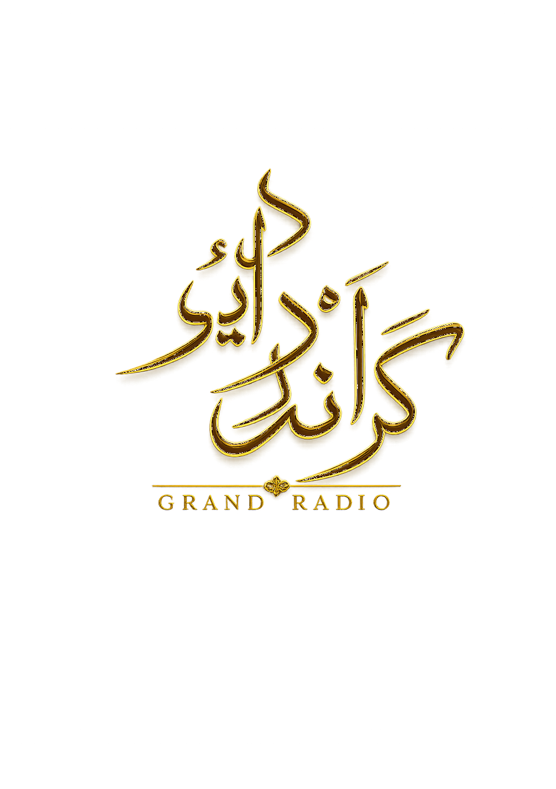

شبانه
در حال دریافت آخرین اثر...
آرشیو از شنوتو دریافت میشود.
00:00

GRANDRADIOخانهی صدا
گرندرادیو؛ روایتهایی کوتاه از شعر، خاطره، موسیقی و لحظههایی که ساده از کنارشان نمیگذریم.
آخرین انتشار
شبانه
آرشیو از شنوتو دریافت میشود.
آرشیو گرندرادیو
در حال دریافت آرشیو...
درباره گرندرادیو
گرندرادیو فضایی مستقل برای روایت، شعر، صدا و موسیقی است؛ جایی که هر اثر میتواند چند دقیقه جهان بیرون را خاموش کند و مخاطب را به یک تصویر، یک خاطره یا یک حس برگرداند.
همراه ما باشید